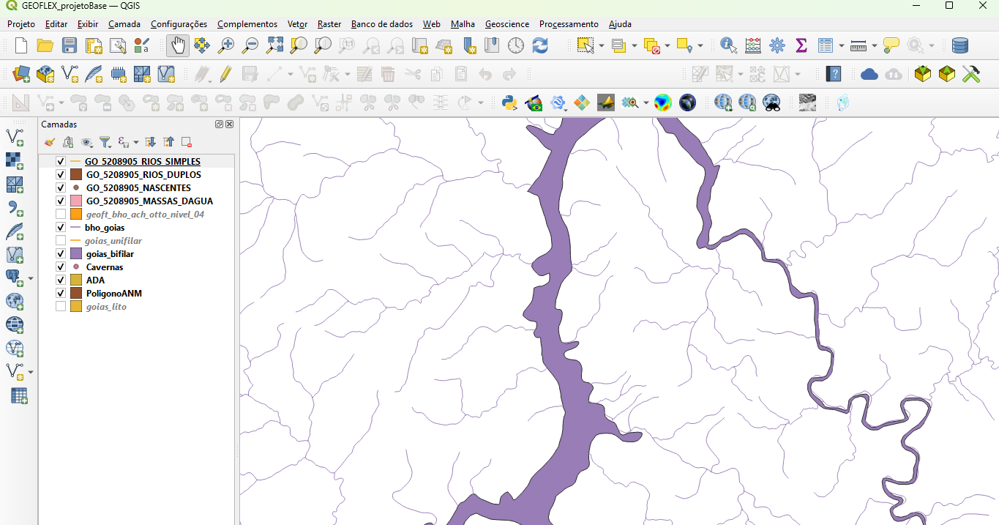

Licenciamento Ambiental
Atuamos em todas as fases do licenciamento — do diagnóstico preliminar até o acompanhamento de condicionantes — reduzindo riscos e garantindo conformidade com órgãos ambientais.
O que entregamos
- EIA/RIMA (Estudo de Impacto Ambiental e Relatório de Impacto Ambiental)
- RAS (Relatório Ambiental Simplificado)
- PCA (Plano de Controle Ambiental)
- Due Diligence ambiental
- Regularização de passivos ambientais
- Suporte em audiências públicas

Metodologia
- Scoping e levantamento bibliográfico
- Campanha de campo
- Análises laboratoriais
- Modelagens ambientais
- Redação técnica
- Protocolo e defesa junto a órgãos
Entregáveis
- Relatório técnico completo
- Mapas temáticos e cartográficos
- RIMA (Relatório de Impacto Ambiental)
- PCA (Plano de Controle Ambiental)
- Anexos metodológicos
- Base de dados GIS
Quando contratar
- Planejamento de novos empreendimentos
- Expansão de atividades existentes
- Regularização de atividades irregulares
- Due diligence para aquisições
- Atendimento a condicionantes de licenças
Figura Técnica

Precisa de licenciamento ambiental para seu projeto?
Garantimos conformidade legal e redução de riscos em todas as etapas do processo.
Solicitar Proposta